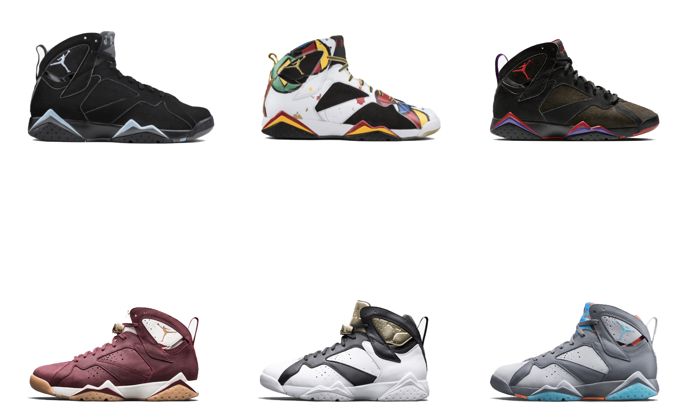

The Air Jordan VII was the shoe worn by MJ on his way to becoming a international icon. Not only did he repeat as a NBA champion, Finals MVP and MVP during the regular season, he also led the USA to a gold medal at the 1992 summer games in Barcelona.
As MJ’s prominence rose, the AJ VII steered the Air Jordan line in a new direction. In an effort to distinguish Air Jordan from Nike as a whole, the shoe saw two daring omissions by design — exterior Nike branding and a visible Air window. Foreshadowing even bigger changes to come, the Air Jordan line now began to be marketed separately from Nike Basketball.
